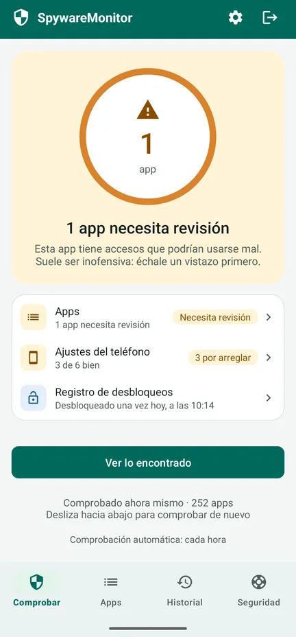
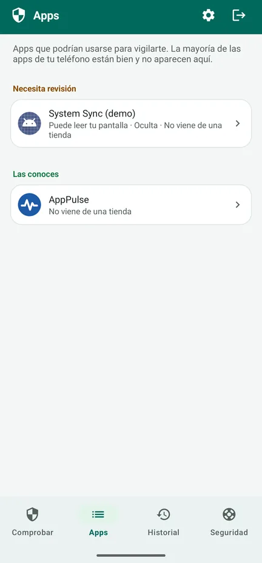
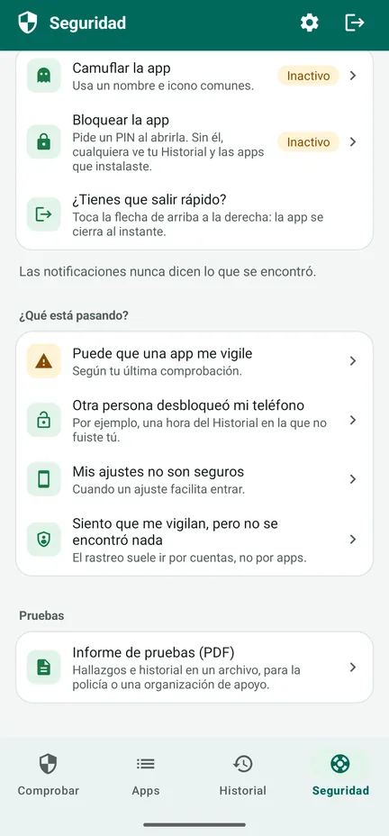
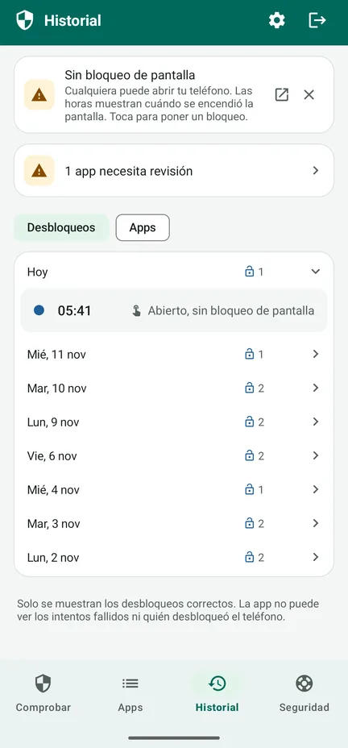

¿Alguien vigila tu teléfono?
SpywareMonitor comprueba qué apps de tu teléfono Android podrían usarse para espiarte y te explica por qué, con palabras sencillas.
Para cualquier persona que teme que su pareja, su ex u otra persona la siga en secreto a través del teléfono. Sin internet, sin anuncios, sin cuenta: nada sale de tu teléfono.
Disponible en Google Play Cómo funciona, paso a paso (en inglés)
Gratis en Google Play para Android 8 o posterior, con una mejora Pro opcional de pago único. En 10 idiomas, también en español.

Stalkerware conocido
132 apps de stalkerware, reconocidas por su nombre y su certificado de firma.
Apps ocultas
Apps sin icono, o con un nombre que finge ser parte de Android.
Apps que pueden vigilarte
Apps que leen tu pantalla o tus notificaciones, o que actúan como administrador del dispositivo.
Ajustes del teléfono
Sin bloqueo de pantalla, depuración por USB u otros ajustes que facilitan entrar.
Siguientes pasos seguros
Qué hacer, en un orden seguro, para no alertar a la otra persona.
Nada sale de tu teléfono
Sin permiso de acceso a internet: sin anuncios, sin rastreo, sin cuenta.
Así funciona
Mira el recorrido de 83 segundos (en inglés): cómo revisa la app tu teléfono, qué significan el naranja y el rojo, y qué hacer después. O echa un vistazo a las pantallas. Ver en YouTube



Gratis: la comprobación
- Revisa todas las apps y las compara con la lista de stalkerware conocido
- Naranja: accesos que podrían usarse mal; suele ser inofensivo, así que échale un vistazo primero. Rojo: stalkerware conocido.
- Los motivos de cada app, y quién la creó
- Ajustes del teléfono, cada uno con un botón para arreglarlo
- La pestaña Seguridad: pasos para tu situación, en un orden seguro
- Salida rápida: la flecha de arriba a la derecha cierra la app al instante
Pro: un solo pago, sin suscripción
- Comprobar automáticamente cada hora, con un solo interruptor. Una notificación nunca dice lo que se encontró (solo el nombre de la app y «Toca para abrir») y puede retrasarse una hora.
- Registro de desbloqueos: cuándo se desbloqueó tu teléfono, para que notes si otra persona lo usó
- Historial: cuándo se instaló cada app, cuándo obtuvo accesos o cuándo se quitó
- Informe de pruebas (PDF) en el idioma de la app, para enseñarlo a la policía o a una organización de apoyo
- Camuflar y bloquear la app: muéstrala como Notas, Tiempo, Recetas o Agenda, y ábrela con un PIN o tu huella
Tu historial ya se guarda en la versión gratuita. El recibo de compra que Google envía por correo y tu historial de pedidos de Play muestran el nombre de la app.
Configuración recomendada: protege la app en 5 pasos (en inglés)
Antes de quitar nada
- Quitar un spyware puede alertar a la persona que lo instaló. Piensa primero en tu seguridad.
- Guarda pruebas: el informe de pruebas, capturas de pantalla o fotos hechas con otro teléfono.
- Habla con alguien de confianza, con la policía o con una línea de ayuda, mejor desde un teléfono que no esté vigilado. La mayoría de los países tienen una línea de ayuda gratuita para la violencia doméstica o de género.
- Cambia tus contraseñas importantes desde otro dispositivo.
- Si estás en peligro inmediato, llama al número de emergencias de tu país.
La pestaña Seguridad de la app te guía paso a paso según tu situación. Lee qué hacer si se encuentra algo (en inglés) y protege primero la propia app (en inglés): camúflala y bloquéala con un PIN.
Los detalles
Todo lo que revisa
- 132 apps de stalkerware conocidas (nombre y certificado de firma)
- Apps sin icono en la lista de apps
- Accesibilidad, acceso a las notificaciones y administrador del dispositivo
- Apps instaladas desde un archivo u otra fuente en lugar de una tienda de apps
- Combinaciones de riesgo, como la ubicación en segundo plano junto con el micrófono y los SMS
- Bloqueo de pantalla, depuración por USB, opciones para desarrolladores, apps que pueden instalar otras apps y un teléfono gestionado por otra persona
- Señales de que el teléfono tiene root, que solo se muestran si se encuentran
Privacidad que puedes comprobar
SpywareMonitor no tiene permiso de acceso a internet, así que no puede enviar nada a ningún sitio. Sus datos quedan fuera de la copia de seguridad en la nube. La lista de stalkerware conocido viene incluida en la app y se actualiza con ella. Política de privacidad (en inglés).
Sincera sobre sus límites
Ningún escáner puede prometer que un teléfono está 100 % limpio. Ninguna app normal puede ver las apps de un perfil de trabajo ni el spyware de un teléfono con un root bien escondido. SpywareMonitor te avisa si encuentra señales de root. El rastreo también puede hacerse a través de cuentas, sin ninguna app.
Idiomas y teléfonos
10 idiomas: español, inglés, noruego, neerlandés, alemán, francés, polaco, chino, hindi y árabe. Android 8 o posterior.
Preguntas frecuentes
¿Cómo sé si hay spyware en mi teléfono Android?
Fíjate en las apps que no reconoces y que no aparecen en la lista de apps, que pueden leer tu pantalla (accesibilidad) o tus notificaciones, que son administradoras del dispositivo o que se instalaron desde un archivo en lugar de desde Play Store. SpywareMonitor revisa todo esto y compara tus apps con una lista de 132 apps de stalkerware conocidas.
¿SpywareMonitor envía mis datos a algún sitio?
No. La app no tiene permiso de acceso a internet, así que nada puede salir de tu teléfono. Sin cuenta, sin anuncios y sin analíticas.
¿Tengo que quitar el spyware enseguida?
Quitarlo puede alertar a la persona que lo instaló. Piensa primero en tu seguridad, guarda pruebas y habla con alguien de confianza, con la policía o con una línea de ayuda, mejor desde un teléfono que no esté vigilado.
¿SpywareMonitor encuentra cualquier tipo de spyware?
Ningún escáner puede prometerlo. Ninguna app normal puede ver las apps de un perfil de trabajo ni el spyware de un teléfono con root. SpywareMonitor lo dice con honestidad y te muestra lo que sí puede revisar.
¿SpywareMonitor es gratis?
La comprobación, los ajustes del teléfono y los pasos de seguridad son gratis. Pro es un solo pago, sin suscripción, y añade comprobaciones automáticas con notificaciones discretas, el Historial, un registro de desbloqueos, un informe de pruebas en PDF, y camuflaje y bloqueo con PIN para la app.
¿Puedo esconder SpywareMonitor en mi teléfono?
Con Pro puedes camuflar la app como Notas, Tiempo, Recetas o Agenda y bloquearla con un PIN. Sus notificaciones nunca dicen lo que se encontró. La flecha de arriba a la derecha cierra la app al instante. Eso sí: el recibo de compra que Google envía por correo y tu historial de pedidos de Play muestran el nombre de la app.
Siento que me vigilan, pero no se encontró nada. ¿Y ahora qué?
El rastreo suele ir por cuentas, no por apps. Deja de compartir tu ubicación en Google Maps, revisa los dispositivos conectados a tu cuenta de Google y tu correo y número de recuperación, y busca un localizador escondido. Haz los cambios en tus cuentas desde otro dispositivo. Más en la ayuda (en inglés).
Guías: spyware en Android
Ayuda paso a paso
Más apps de Nordic Appworks
UpdateMonitor — un historial de cada actualización, instalación y eliminación de apps en tu teléfono, con los cambios de permisos. RebootMonitor — cuándo se reinició tu teléfono por última vez. Igual que SpywareMonitor: sin internet y sin anuncios.
Contacto
Preguntas o comentarios: support@spywaremonitor.app
La lista de stalkerware conocido procede de los indicadores de stalkerware de Echap, con licencia CC BY 4.0.